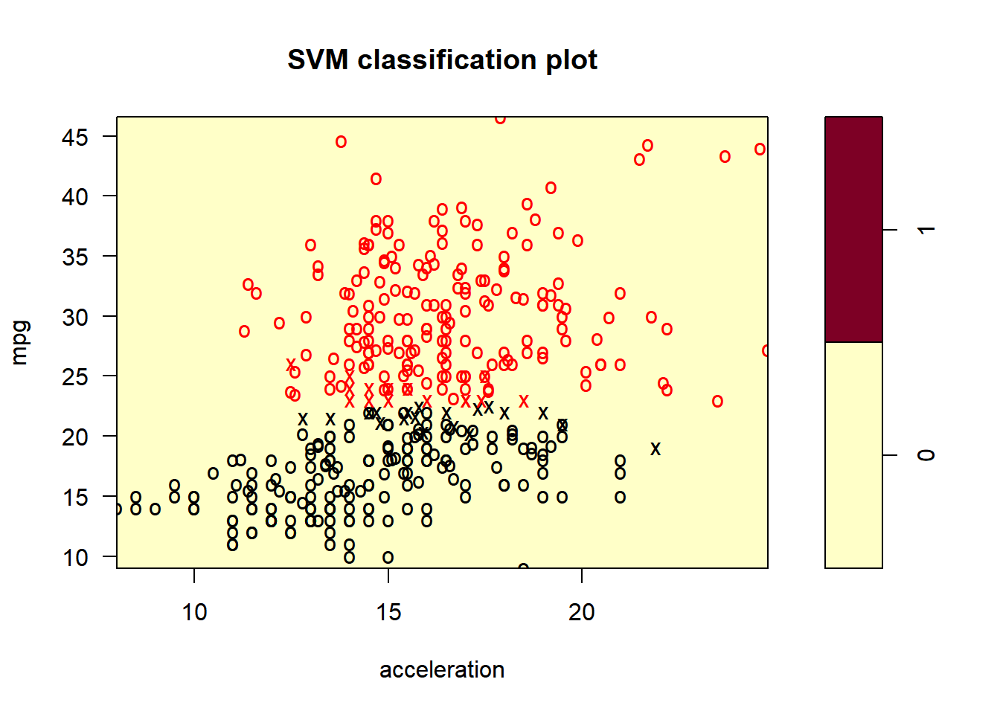
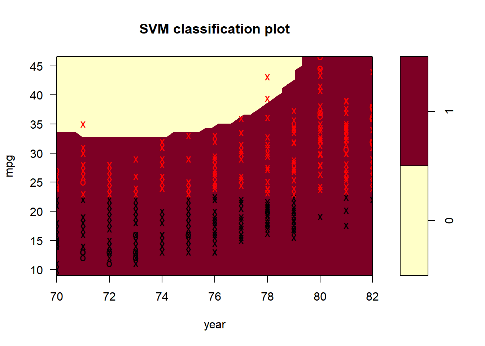
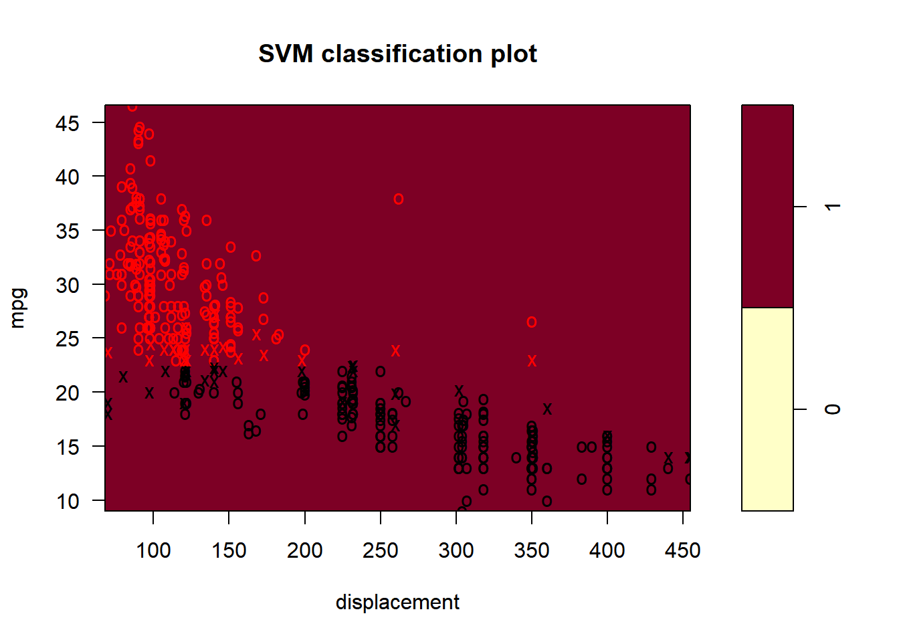
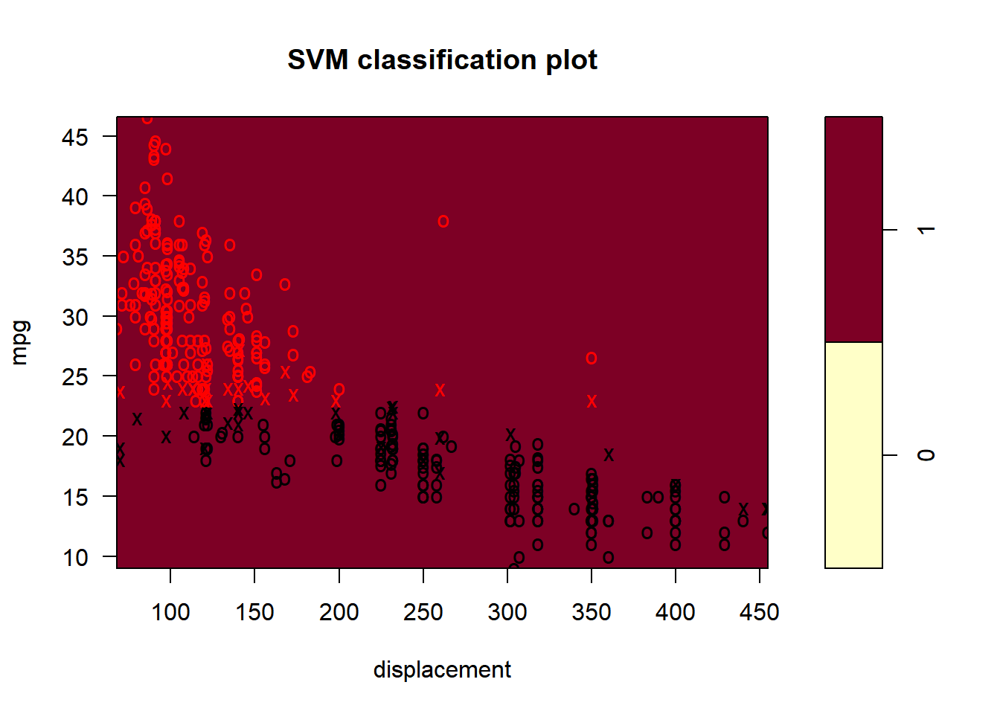

Desarrollo de los ejercicios del capitulo IX del libro “Una introducción al aprendizaje estadistico con aplicaciones en R”
Punto 4
- Genere un conjunto de datos simulados de dos clases con 100 observaciones y dos características en las que haya una separación visible pero no lineal entre las dos clases. Muestre que en esta configuración, una máquina de vectores de soporte con un núcleo polinomial (con un grado mayor que 1) o un núcleo radial superará a un clasificador de vectores de soporte en los datos de entrenamiento. ¿Qué técnica funciona mejor en los datos de prueba? Haga tramas e informe la capacitación y pruebe las tasas de error para respaldar sus afirmaciones.
library(e1071)
set.seed(1)
x <- rnorm(100)
y <- 4 * x^3 + 1 + rnorm(100)
clase <- sample(100, 50)
y[clase] <- y[clase] + 3
y[-clase] <- y[-clase] - 3
plot(x[clase], y[clase], col = "green", xlab = "X", ylab = "Y", ylim = c(-10, 25), xlim = c(-1.5, 2.0))
points(x[-clase], y[-clase], col = "blue")Clasificador de soporte en los datos de entrenamiento
z <- rep(-1, 100)
z[clase] <- 1
data <- data.frame(x = x, y = y, z = as.factor(z))
train <- sample(100, 50)
data.train <- data[train, ]
data.test <- data[-train, ]
svm.linear <- svm(z ~ ., data = data.train, kernel = "linear", cost = 10)
plot(svm.linear, data.train)table(predict = predict(svm.linear, data.train), truth = data.train$z)## truth
## predict -1 1
## -1 21 1
## 1 4 24El clasificador de vectores de soporte comete 4 errores en los datos de entrenamiento.
Maquina de vectores de soporte con un núcleo polinomial.
svm.poly <- svm(z ~ ., data = data.train, kernel = "polynomial", cost = 10)
plot(svm.poly, data.train)table(predict = predict(svm.poly, data.train), truth = data.train$z)## truth
## predict -1 1
## -1 23 1
## 1 2 24La máquina de vectores de soporte comete 2 errores en los datos de entrenamiento.
svm.radial <- svm(z ~ ., data = data.train, kernel = "radial", gamma = 1, cost = 10)
plot(svm.radial, data.train)table(predict = predict(svm.radial, data.train), truth = data.train$z)## truth
## predict -1 1
## -1 25 0
## 1 0 25La máquina con un núcleo radial comete 0 errores en los datos de entrenamiento.
Aplicando a los datos de prueba.
plot(svm.linear, data.test)
table(predict = predict(svm.linear, data.test), truth = data.test$z)## truth
## predict -1 1
## -1 24 0
## 1 1 25plot(svm.poly, data.test)table(predict = predict(svm.poly, data.test), truth = data.test$z)## truth
## predict -1 1
## -1 23 1
## 1 2 24plot(svm.radial, data.test)table(predict = predict(svm.radial, data.test), truth = data.test$z)## truth
## predict -1 1
## -1 19 0
## 1 6 25Como vemos en los resultados anteriores, las máquinas de vectores de soporte lineal, polinomial y radial clasifican, respectivamente 4, 2 y 0 observaciones de forma incorrecta. Entonces, el núcleo radial es el mejor modelo en este caso.
Punto 5
- Hemos visto que podemos ajustar un SVM con un núcleo no lineal para realizar la clasificación utilizando un límite de decisión no lineal. Ahora veremos que también podemos obtener un límite de decisión no lineal al realizar una regresión logística utilizando transformaciones no lineales de las características.
(a) Genere un conjunto de datos con n = 500 y p = 2, de modo que las observaciones pertenezcan a dos clases con un límite de decisión cuadrático entre ellas. Por ejemplo, puede hacer esto de la siguiente manera:
> x1 = runif (500) -0.5
> x2 = runif (500) -0.5
> y = 1 * (x1 ^ 2-x2 ^ 2> 0)
set.seed(1)
x1 <- runif(500) - 0.5
x2 <- runif(500) - 0.5
y <- 1 * (x1^2 - x2^2 > 0)(b) Grafique las observaciones, coloreadas de acuerdo con sus etiquetas de clase. Su diagrama debe mostrar X1 en el eje xy X2 en el eje y.
plot(x1, x2, xlab = "X1", ylab = "X2", col = (5 - y), pch = (2 - y))(c) Ajuste un modelo de regresión logística a los datos, utilizando X1 y X2 como predictores.
logit.fit <- glm(y ~ x1 + x2, family = "binomial")
summary(logit.fit)##
## Call:
## glm(formula = y ~ x1 + x2, family = "binomial")
##
## Deviance Residuals:
## Min 1Q Median 3Q Max
## -1.179 -1.139 -1.112 1.206 1.257
##
## Coefficients:
## Estimate Std. Error z value Pr(>|z|)
## (Intercept) -0.087260 0.089579 -0.974 0.330
## x1 0.196199 0.316864 0.619 0.536
## x2 -0.002854 0.305712 -0.009 0.993
##
## (Dispersion parameter for binomial family taken to be 1)
##
## Null deviance: 692.18 on 499 degrees of freedom
## Residual deviance: 691.79 on 497 degrees of freedom
## AIC: 697.79
##
## Number of Fisher Scoring iterations: 3Ninguna de las variables es estadísticamente significativa.
(d) Aplique este modelo a los datos de entrenamiento para obtener una etiqueta de clase predicha para cada observación de entrenamiento. Trace las observaciones, coloreadas de acuerdo con las etiquetas de clase predichas. El límite de decisión debe ser lineal.
data <- data.frame(x1 = x1, x2 = x2, y = y)
probs <- predict(logit.fit, data, type = "response")
preds <- rep(0, 500)
preds[probs > 0.47] <- 1
plot(data[preds == 1, ]$x1, data[preds == 1, ]$x2, col = (6 - 1), pch = (2 - 1), xlab = "X1", ylab = "X2")
points(data[preds == 0, ]$x1, data[preds == 0, ]$x2, col = (4 - 0), pch = (2 - 0))El límite de decisión es lineal.
(e) Ahora ajuste un modelo de regresión logística a los datos utilizando funciones no lineales de X1 y X2 como predictores (por ejemplo, X12, X1 × X2, log (X2), etc.).
logitnl.fit <- glm(y ~ poly(x1, 2) + poly(x2, 2) + I(x1 * x2), family = "binomial")## Warning: glm.fit: algorithm did not converge## Warning: glm.fit: fitted probabilities numerically 0 or 1
## occurredsummary(logitnl.fit)##
## Call:
## glm(formula = y ~ poly(x1, 2) + poly(x2, 2) + I(x1 * x2), family = "binomial")
##
## Deviance Residuals:
## Min 1Q Median 3Q Max
## -8.240e-04 -2.000e-08 -2.000e-08 2.000e-08 1.163e-03
##
## Coefficients:
## Estimate Std. Error z value Pr(>|z|)
## (Intercept) -102.2 4302.0 -0.024 0.981
## poly(x1, 2)1 2715.3 141109.5 0.019 0.985
## poly(x1, 2)2 27218.5 842987.2 0.032 0.974
## poly(x2, 2)1 -279.7 97160.4 -0.003 0.998
## poly(x2, 2)2 -28693.0 875451.3 -0.033 0.974
## I(x1 * x2) -206.4 41802.8 -0.005 0.996
##
## (Dispersion parameter for binomial family taken to be 1)
##
## Null deviance: 6.9218e+02 on 499 degrees of freedom
## Residual deviance: 3.5810e-06 on 494 degrees of freedom
## AIC: 12
##
## Number of Fisher Scoring iterations: 25De nuevo ninguna de las variables son estadisticamente significativas
(f) Aplique este modelo a los datos de entrenamiento para obtener una etiqueta de clase predicha para cada observación de entrenamiento. Trace las observaciones, coloreadas de acuerdo con las etiquetas de clase predichas. El límite de decisión debe ser obviamente no lineal. Si no es así, repita (a) - (e) hasta que encuentre un ejemplo en el que las etiquetas de clase predichas sean obviamente no lineales.
probs <- predict(logitnl.fit, data, type = "response")
preds <- rep(0, 500)
preds[probs > 0.47] <- 1
plot(data[preds == 1, ]$x1, data[preds == 1, ]$x2, col = (6 - 1), pch = (2 - 1), xlab = "X1", ylab = "X2")
points(data[preds == 0, ]$x1, data[preds == 0, ]$x2, col = (4 - 0), pch = (2 - 0))El límite de decisión no lineal es muy similar al límite de decisión real.
(g) Ajuste un clasificador de vector de soporte a los datos con X1 y X2 como predictores. Obtenga una predicción de clase para cada observación de entrenamiento. Trace las observaciones, coloreadas de acuerdo con las etiquetas de clase predichas.
data$y <- as.factor(data$y)
svm.fit <- svm(y ~ x1 + x2, data, kernel = "linear", cost = 0.01)
preds <- predict(svm.fit, data)
plot(data[preds == 0, ]$x1, data[preds == 0, ]$x2, col = (5 - 0), pch = (2 - 0), xlab = "X1", ylab = "X2")
points(data[preds == 1, ]$x1, data[preds == 1, ]$x2, col = (4 - 1), pch = (2 - 1))Este clasificador de vectores de soporte clasifica todos los puntos en una sola clase.
(h) Ajuste un SVM usando un núcleo no lineal a los datos. Obtenga una predicción de clase para cada observación de entrenamiento. Trace las observaciones, coloreadas de acuerdo con las etiquetas de clase predichas.
data$y <- as.factor(data$y)
svmnl.fit <- svm(y ~ x1 + x2, data, kernel = "radial", gamma = 1)
preds <- predict(svmnl.fit, data)
plot(data[preds == 0, ]$x1, data[preds == 0, ]$x2, col = (5 - 0), pch = (1 - 0), xlab = "X1", ylab = "X2")
points(data[preds == 1, ]$x1, data[preds == 1, ]$x2, col = (5 - 1), pch = (2 - 1))De nuevo el límite de decisión no lineal es muy similar al límite de decisión verdadero.
(i) Comente sus resultados.
Con los anteriores resultados podemos concluir que las maquinas de soporte con metodos no lineal y regresión logística con términos de interacción son muy efectivas.
Punto 6
- Al final de la Sección 9.6.1, se afirma que, en el caso de los datos que son apenas linealmente separables, un clasificador de vectores de soporte con un pequeño valor de costo que clasifica erróneamente un par de observaciones de entrenamiento puede funcionar mejor en los datos de prueba que uno con un enorme valor de costo que no clasifica erróneamente ninguna observación de capacitación. Ahora investigará este reclamo.
(a) Genere datos de dos clases con p = 2 de tal manera que las clases sean apenas separables linealmente.
set.seed(123)
x.uno <- runif(500, 0, 90)
y.uno <- runif(500, x.uno + 10, 100)
x.uno.noise <- runif(50, 20, 80)
y.uno.noise <- 5/4 * (x.uno.noise - 10) + 0.1
x.cero <- runif(500, 10, 100)
y.cero <- runif(500, 0, x.cero - 10)
x.cero.noise <- runif(50, 20, 80)
y.cero.noise <- 5/4 * (x.cero.noise - 10) - 0.1
clase.uno <- seq(1, 550)
x <- c(x.uno, x.uno.noise, x.cero, x.cero.noise)
y <- c(y.uno, y.uno.noise, y.cero, y.cero.noise)
plot(x[clase.uno], y[clase.uno], col = "blue", pch = 5, ylim = c(0, 100))
points(x[-clase.uno], y[-clase.uno], col = "lightblue", pch = 5)
(b) Calcule las tasas de error de validación cruzada para los clasificadores de vectores de soporte con un rango de valores de costo. ¿Cuántos errores de capacitación están mal clasificados para cada valor de costo considerado, y cómo se relaciona esto con los errores de validación cruzada obtenidos?
set.seed(123)
z <- rep(0, 1100)
z[clase.uno] <- 1
data <- data.frame(x = x, y = y, z = as.factor(z))
tune.out <- tune(svm, z ~ ., data = data, kernel = "linear", ranges = list(cost = c(0.01, 0.1, 1, 5, 10, 100, 1000, 10000)))
summary(tune.out)##
## Parameter tuning of 'svm':
##
## - sampling method: 10-fold cross validation
##
## - best parameters:
## cost
## 10000
##
## - best performance: 0
##
## - Detailed performance results:
## cost error dispersion
## 1 1e-02 0.06454545 0.02204012
## 2 1e-01 0.04909091 0.01973190
## 3 1e+00 0.04909091 0.01973190
## 4 5e+00 0.05000000 0.01928473
## 5 1e+01 0.05090909 0.01828255
## 6 1e+02 0.05181818 0.01966197
## 7 1e+03 0.03636364 0.03455077
## 8 1e+04 0.00000000 0.00000000El mejor parametro parece ser el que se obtiene con 10000
data.frame(cost = tune.out$performance$cost, misclass = tune.out$performance$error * 1100)## cost misclass
## 1 1e-02 71
## 2 1e-01 54
## 3 1e+00 54
## 4 5e+00 55
## 5 1e+01 56
## 6 1e+02 57
## 7 1e+03 40
## 8 1e+04 0Podemos ver como 10000 tiene cero errores al clasificar los puntos
(c) Genere un conjunto de datos de prueba apropiado y calcule los errores de prueba correspondientes a cada uno de los valores de costo considerados. ¿Qué valor del costo conduce a la menor cantidad de errores de prueba, y cómo se compara esto con los valores de costo que producen la menor cantidad de errores de capacitación y la menor cantidad de errores de validación cruzada?
x.test <- runif(1000, 0, 100)
clase.uno <- sample(1000, 500)
y.test <- rep(NA, 1000)
for (i in clase.uno) {
y.test[i] <- runif(1, x.test[i], 100)
}
for (i in setdiff(1:1000, clase.uno)) {
y.test[i] <- runif(1, 0, x.test[i])
}
plot(x.test[clase.uno], y.test[clase.uno], col = "blue", pch = 5)
points(x.test[-clase.uno], y.test[-clase.uno], col = "lightblue", pch = 5)set.seed(123)
z.test <- rep(0, 1000)
z.test[clase.uno] <- 1
data.test <- data.frame(x = x.test, y = y.test, z = as.factor(z.test))
costos <- c(0.01, 0.1, 1, 5, 10, 100, 1000, 10000)
test.err <- rep(NA, length(costos))
for (i in 1:length(costos)) {
svm.fit <- svm(z ~ ., data = data, kernel = "linear", cost = costos[i])
pred <- predict(svm.fit, data.test)
test.err[i] <- sum(pred != data.test$z)
}
data.frame(cost = costos, misclass = test.err)## cost misclass
## 1 1e-02 46
## 2 1e-01 12
## 3 1e+00 0
## 4 5e+00 0
## 5 1e+01 0
## 6 1e+02 198
## 7 1e+03 214
## 8 1e+04 214Los costos de 5 o 10 parecen funcionar mejor en las observaciones de prueba
(d) Discuta sus resultados.
Pdemos ver como un costo grande intenta clasificar correctamente los puntos, sin embargo, un pequeño costo hace algunos errores en los puntos de prueba y funciona mejor en los datos.
Punto 7
- En este problema, utilizará enfoques de vectores de soporte para predecir si un automóvil determinado obtiene un millaje de gasolina alto o bajo en función del conjunto de datos automático.
(a) Cree una variable binaria que tome un 1 para los automóviles con millaje de gasolina por encima de la mediana, y un 0 para automóviles con millaje de gasolina por debajo de la mediana.
require(ISLR)
library(ISLR)
var <- ifelse(Auto$mpg > median(Auto$mpg), 1, 0)
Auto$mpglevel <- as.factor(var)(b) Ajuste un clasificador de vector de soporte a los datos con varios valores de costo, para predecir si un automóvil obtiene un millaje de gasolina alto o bajo. Informe los errores de validación cruzada asociados con diferentes valores de este parámetro. Comenta tus resultados.
require(e1071)
set.seed(123)
tune.out <- tune(svm, mpglevel ~ ., data = Auto, kernel = "linear", ranges = list(cost = c(0.01, 0.1, 1, 5, 10, 100, 1000)))
summary(tune.out)##
## Parameter tuning of 'svm':
##
## - sampling method: 10-fold cross validation
##
## - best parameters:
## cost
## 0.01
##
## - best performance: 0
##
## - Detailed performance results:
## cost error dispersion
## 1 1e-02 0 0
## 2 1e-01 0 0
## 3 1e+00 0 0
## 4 5e+00 0 0
## 5 1e+01 0 0
## 6 1e+02 0 0
## 7 1e+03 0 0Un costo de 1 es el que parece funionar mejor ya que es el que tiene menor error
(c) Ahora repita (b), esta vez usando SVM con núcleos de base radial y polinomial, con diferentes valores de gamma y grado y costo. Comenta tus resultados.
set.seed(1)
tune.out <- tune(svm, mpglevel ~ ., data = Auto, kernel = "polynomial", ranges = list(cost = c(0.01, 0.1, 1, 5, 10, 100), degree = c(2, 3, 4)))
summary(tune.out)##
## Parameter tuning of 'svm':
##
## - sampling method: 10-fold cross validation
##
## - best parameters:
## cost degree
## 100 3
##
## - best performance: 0.2605128
##
## - Detailed performance results:
## cost degree error dispersion
## 1 1e-02 2 0.5511538 0.04366593
## 2 1e-01 2 0.5511538 0.04366593
## 3 1e+00 2 0.5511538 0.04366593
## 4 5e+00 2 0.5511538 0.04366593
## 5 1e+01 2 0.5129487 0.08921538
## 6 1e+02 2 0.3064744 0.09761588
## 7 1e-02 3 0.5511538 0.04366593
## 8 1e-01 3 0.5511538 0.04366593
## 9 1e+00 3 0.5511538 0.04366593
## 10 5e+00 3 0.5511538 0.04366593
## 11 1e+01 3 0.5511538 0.04366593
## 12 1e+02 3 0.2605128 0.09868936
## 13 1e-02 4 0.5511538 0.04366593
## 14 1e-01 4 0.5511538 0.04366593
## 15 1e+00 4 0.5511538 0.04366593
## 16 5e+00 4 0.5511538 0.04366593
## 17 1e+01 4 0.5511538 0.04366593
## 18 1e+02 4 0.5511538 0.04366593El error de validación cruzada más bajo se obtiene para un grado de 2 y un costo de 100.
set.seed(123)
tune.out <- tune(svm, mpglevel ~ ., data = Auto, kernel = "radial", ranges = list(cost = c(0.01, 0.1, 1, 5, 10, 100), gamma = c(0.01, 0.1, 1, 5, 10, 100)))
summary(tune.out)##
## Parameter tuning of 'svm':
##
## - sampling method: 10-fold cross validation
##
## - best parameters:
## cost gamma
## 0.1 0.01
##
## - best performance: 0
##
## - Detailed performance results:
## cost gamma error dispersion
## 1 1e-02 1e-02 0.581730769 0.04740051
## 2 1e-01 1e-02 0.000000000 0.00000000
## 3 1e+00 1e-02 0.000000000 0.00000000
## 4 5e+00 1e-02 0.000000000 0.00000000
## 5 1e+01 1e-02 0.000000000 0.00000000
## 6 1e+02 1e-02 0.000000000 0.00000000
## 7 1e-02 1e-01 0.050897436 0.04782813
## 8 1e-01 1e-01 0.000000000 0.00000000
## 9 1e+00 1e-01 0.000000000 0.00000000
## 10 5e+00 1e-01 0.000000000 0.00000000
## 11 1e+01 1e-01 0.000000000 0.00000000
## 12 1e+02 1e-01 0.000000000 0.00000000
## 13 1e-02 1e+00 0.581730769 0.04740051
## 14 1e-01 1e+00 0.581730769 0.04740051
## 15 1e+00 1e+00 0.005064103 0.01067713
## 16 5e+00 1e+00 0.005064103 0.01067713
## 17 1e+01 1e+00 0.005064103 0.01067713
## 18 1e+02 1e+00 0.005064103 0.01067713
## 19 1e-02 5e+00 0.581730769 0.04740051
## 20 1e-01 5e+00 0.581730769 0.04740051
## 21 1e+00 5e+00 0.510320513 0.06346294
## 22 5e+00 5e+00 0.510320513 0.06346294
## 23 1e+01 5e+00 0.510320513 0.06346294
## 24 1e+02 5e+00 0.510320513 0.06346294
## 25 1e-02 1e+01 0.581730769 0.04740051
## 26 1e-01 1e+01 0.581730769 0.04740051
## 27 1e+00 1e+01 0.546025641 0.06355090
## 28 5e+00 1e+01 0.538461538 0.06587368
## 29 1e+01 1e+01 0.538461538 0.06587368
## 30 1e+02 1e+01 0.538461538 0.06587368
## 31 1e-02 1e+02 0.581730769 0.04740051
## 32 1e-01 1e+02 0.581730769 0.04740051
## 33 1e+00 1e+02 0.581730769 0.04740051
## 34 5e+00 1e+02 0.581730769 0.04740051
## 35 1e+01 1e+02 0.581730769 0.04740051
## 36 1e+02 1e+02 0.581730769 0.04740051El error de validación cruzada más bajo se obtiene para una gamma de 0.01 y un costo de 100.
(d) Haga algunos gráficos para respaldar sus afirmaciones en (b) y (c). Sugerencia: En el laboratorio, utilizamos la función plot() para objetos svm solo en casos con p = 2. Cuando p> 2, puede usar la función plot() para crear gráficos que muestren pares de variables a la vez. Esencialmente, en lugar de escribir
> plot (svmfit, dat)
donde svmfit contiene su modelo ajustado y dat es un marco de datos que contiene sus datos, puede escribir
> plot (svmfit, dat, x1∼x4)
para graficar solo las variables primera y cuarta. Sin embargo, debe reemplazar x1 y x4 con los nombres correctos de las variables. Para obtener más información, escriba ?Plot.svm.
svm.linear <- svm(mpglevel ~ ., data = Auto, kernel = "linear", cost = 1)
svm.poly <- svm(mpglevel ~ ., data = Auto, kernel = "polynomial", cost = 100, degree = 2)
svm.radial <- svm(mpglevel ~ ., data = Auto, kernel = "radial", cost = 100, gamma = 0.01)
plotpairs = function(fit) {
for (name in names(Auto)[!(names(Auto) %in% c("mpg", "mpglevel", "name"))]) {
plot(fit, Auto, as.formula(paste("mpg~", name, sep = "")))
}
}
plotpairs(svm.linear)
plotpairs(svm.poly)
plotpairs(svm.radial) 

Punto 8
- Este problema involucra el conjunto de datos de OJ que es parte del paquete ISLR.
(a) Cree un conjunto de entrenamiento que contenga una muestra aleatoria de 800 observaciones, y un conjunto de prueba que contenga las observaciones restantes.
set.seed(123)
train <- sample(nrow(OJ), 800)
OJ.train <- OJ[train, ]
OJ.test <- OJ[-train, ](b) Ajuste un clasificador de vector de soporte a los datos de entrenamiento usando cost = 0.01, con Compra como respuesta y las otras variables como predictores. Use la función summary() para generar estadísticas resumidas y describir los resultados obtenidos.
svm.linear <- svm(Purchase ~ ., data = OJ.train, kernel = "linear", cost = 0.01)
summary(svm.linear)##
## Call:
## svm(formula = Purchase ~ ., data = OJ.train, kernel = "linear",
## cost = 0.01)
##
##
## Parameters:
## SVM-Type: C-classification
## SVM-Kernel: linear
## cost: 0.01
##
## Number of Support Vectors: 442
##
## ( 220 222 )
##
##
## Number of Classes: 2
##
## Levels:
## CH MMEl clasificador de vectores de soporte crea 442 vectores de soporte. De estos, 220 pertenecen al nivel CH y los 222 restantes pertenecen al nivel MM.
(c) ¿Cuáles son las tasas de error de capacitación y prueba?
train.pred <- predict(svm.linear, OJ.train)
table(OJ.train$Purchase, train.pred)## train.pred
## CH MM
## CH 426 61
## MM 71 242(71 + 61) / (426 + 242 + 71 + 61)
test.pred <- predict(svm.linear, OJ.test)
table(OJ.test$Purchase, test.pred)## test.pred
## CH MM
## CH 145 21
## MM 27 77(27 + 21) / (145 + 77 + 27 + 21)
La tasa de error de entrenamiento es de 16.5% y la tasa de error de prueba es de aproximadamente 17.7%.
(d) Use la función tune() para seleccionar un costo óptimo. Considere values en el rango de 0.01 a 10.
set.seed(123)
tune.out <- tune(svm, Purchase ~ ., data = OJ.train, kernel = "linear", ranges = list(cost = 10^seq(-2, 1, by = 0.25)))
summary(tune.out)##
## Parameter tuning of 'svm':
##
## - sampling method: 10-fold cross validation
##
## - best parameters:
## cost
## 3.162278
##
## - best performance: 0.16375
##
## - Detailed performance results:
## cost error dispersion
## 1 0.01000000 0.17375 0.04910660
## 2 0.01778279 0.17250 0.04816061
## 3 0.03162278 0.17125 0.04678927
## 4 0.05623413 0.17250 0.04594683
## 5 0.10000000 0.17500 0.04823265
## 6 0.17782794 0.17625 0.04427267
## 7 0.31622777 0.17125 0.04084609
## 8 0.56234133 0.17125 0.04168749
## 9 1.00000000 0.16875 0.03963812
## 10 1.77827941 0.16875 0.04135299
## 11 3.16227766 0.16375 0.04185375
## 12 5.62341325 0.17125 0.03998698
## 13 10.00000000 0.17000 0.04005205Podemos ver que el costo optimo es de 3.16
(e) Calcule las tasas de error de entrenamiento y prueba usando este nuevo valor por el cost
svm.linear <- svm(Purchase ~ ., kernel = "linear", data = OJ.train, cost = tune.out$best.parameter$cost)
train.pred <- predict(svm.linear, OJ.train)
table(OJ.train$Purchase, train.pred)## train.pred
## CH MM
## CH 427 60
## MM 69 244(69 + 60) / (427 + 244 + 69 + 60)
test.pred <- predict(svm.linear, OJ.test)
table(OJ.test$Purchase, test.pred)## test.pred
## CH MM
## CH 149 17
## MM 25 79(25 + 17) / (149 + 79 + 25 + 17)
Podemos ver que, con el mejor costo, la tasa de error de entrenamiento es ahora del 16.1% y la tasa de error de la prueba es del 15.5%.
(f) Repita las partes (b) a (e) usando una máquina de vectores de soporte con un núcleo radial Use el valor predeterminado para gamma.
svm.radial <- svm(Purchase ~ ., kernel = "radial", data = OJ.train)
summary(svm.radial)##
## Call:
## svm(formula = Purchase ~ ., data = OJ.train, kernel = "radial")
##
##
## Parameters:
## SVM-Type: C-classification
## SVM-Kernel: radial
## cost: 1
##
## Number of Support Vectors: 367
##
## ( 181 186 )
##
##
## Number of Classes: 2
##
## Levels:
## CH MMtrain.pred <- predict(svm.radial, OJ.train)
table(OJ.train$Purchase, train.pred)## train.pred
## CH MM
## CH 446 41
## MM 70 243(70 + 41) / (446 + 243 + 70 + 41)
test.pred <- predict(svm.radial, OJ.test)
table(OJ.test$Purchase, test.pred)## test.pred
## CH MM
## CH 149 17
## MM 34 70(34 + 17) / (149 + 70 + 34 + 17)
El clasificador tiene un error de entrenamiento del 13.8% y un error de prueba del 18.8%.
set.seed(123)
tune.out <- tune(svm, Purchase ~ ., data = OJ.train, kernel = "radial", ranges = list(cost = 10^seq(-2,
1, by = 0.25)))
summary(tune.out)##
## Parameter tuning of 'svm':
##
## - sampling method: 10-fold cross validation
##
## - best parameters:
## cost
## 1
##
## - best performance: 0.16125
##
## - Detailed performance results:
## cost error dispersion
## 1 0.01000000 0.39125 0.04411554
## 2 0.01778279 0.39125 0.04411554
## 3 0.03162278 0.37750 0.05027701
## 4 0.05623413 0.20625 0.07126096
## 5 0.10000000 0.17625 0.06108112
## 6 0.17782794 0.17750 0.06230525
## 7 0.31622777 0.17125 0.05104804
## 8 0.56234133 0.16625 0.05272110
## 9 1.00000000 0.16125 0.04875178
## 10 1.77827941 0.16250 0.04564355
## 11 3.16227766 0.16375 0.04226652
## 12 5.62341325 0.16500 0.03717451
## 13 10.00000000 0.17000 0.04794383svm.radial <- svm(Purchase ~ ., kernel = "radial", data = OJ.train, cost = tune.out$best.parameter$cost)
summary(svm.radial)##
## Call:
## svm(formula = Purchase ~ ., data = OJ.train, kernel = "radial",
## cost = tune.out$best.parameter$cost)
##
##
## Parameters:
## SVM-Type: C-classification
## SVM-Kernel: radial
## cost: 1
##
## Number of Support Vectors: 367
##
## ( 181 186 )
##
##
## Number of Classes: 2
##
## Levels:
## CH MMtrain.pred <- predict(svm.radial, OJ.train)
table(OJ.train$Purchase, train.pred)## train.pred
## CH MM
## CH 446 41
## MM 70 243(77 + 44) / (441 + 238 + 77 + 44)
test.pred <- predict(svm.radial, OJ.test)
table(OJ.test$Purchase, test.pred)## test.pred
## CH MM
## CH 149 17
## MM 34 70(34 + 17) / (149 + 70 + 34 + 17)
El ajuste no reduce las tasas de error de tren y prueba
(g) Repita las partes (b) a (e) usando una máquina de vectores de soporte con un núcleo polinomial Establecer grado = 2.
svm.poly <- svm(Purchase ~ ., kernel = "polynomial", data = OJ.train, degree = 2)
summary(svm.poly)##
## Call:
## svm(formula = Purchase ~ ., data = OJ.train, kernel = "polynomial",
## degree = 2)
##
##
## Parameters:
## SVM-Type: C-classification
## SVM-Kernel: polynomial
## cost: 1
## degree: 2
## coef.0: 0
##
## Number of Support Vectors: 445
##
## ( 219 226 )
##
##
## Number of Classes: 2
##
## Levels:
## CH MMtrain.pred <- predict(svm.poly, OJ.train)
table(OJ.train$Purchase, train.pred)## train.pred
## CH MM
## CH 454 33
## MM 105 208(105 + 33) / (454 + 208 + 105 + 33)
test.pred <- predict(svm.poly, OJ.test)
table(OJ.test$Purchase, test.pred)## test.pred
## CH MM
## CH 153 13
## MM 47 57(47 + 13) / (153 + 57 + 47 + 13)
El clasificador tiene un error de entrenamiento del 17.2% y un error de prueba del 22.2%, lo que no mejora el núcleo lineal.
set.seed(123)
tune.out <- tune(svm, Purchase ~ ., data = OJ.train, kernel = "polynomial", degree = 2, ranges = list(cost = 10^seq(-2,
1, by = 0.25)))
summary(tune.out)##
## Parameter tuning of 'svm':
##
## - sampling method: 10-fold cross validation
##
## - best parameters:
## cost
## 3.162278
##
## - best performance: 0.16625
##
## - Detailed performance results:
## cost error dispersion
## 1 0.01000000 0.39000 0.04281744
## 2 0.01778279 0.36875 0.04535738
## 3 0.03162278 0.35750 0.05210833
## 4 0.05623413 0.32250 0.05130248
## 5 0.10000000 0.31000 0.05361903
## 6 0.17782794 0.23500 0.07163759
## 7 0.31622777 0.21250 0.07430231
## 8 0.56234133 0.20250 0.06146363
## 9 1.00000000 0.19250 0.06645801
## 10 1.77827941 0.17625 0.06520534
## 11 3.16227766 0.16625 0.05529278
## 12 5.62341325 0.16750 0.05839283
## 13 10.00000000 0.17125 0.06010696svm.poly <- svm(Purchase ~ ., kernel = "polynomial", degree = 2, data = OJ.train, cost = tune.out$best.parameter$cost)
summary(svm.poly)##
## Call:
## svm(formula = Purchase ~ ., data = OJ.train, kernel = "polynomial",
## degree = 2, cost = tune.out$best.parameter$cost)
##
##
## Parameters:
## SVM-Type: C-classification
## SVM-Kernel: polynomial
## cost: 3.162278
## degree: 2
## coef.0: 0
##
## Number of Support Vectors: 381
##
## ( 186 195 )
##
##
## Number of Classes: 2
##
## Levels:
## CH MMtrain.pred <- predict(svm.poly, OJ.train)
table(OJ.train$Purchase, train.pred)## train.pred
## CH MM
## CH 452 35
## MM 87 226(87 + 35) / (452 + 226 + 87 + 35)
test.pred <- predict(svm.poly, OJ.test)
table(OJ.test$Purchase, test.pred)## test.pred
## CH MM
## CH 151 15
## MM 41 63(41 + 15) / (151 + 63 + 41 + 15)
El ajuste reduce las tasas de error de entreno y prueba.
(h) En general, ¿qué enfoque parece dar los mejores resultados con estos datos?
En general, el núcleo de base radial parece estar produciendo un error mínimo de clasificación errónea en los datos del tren y de la prueba.